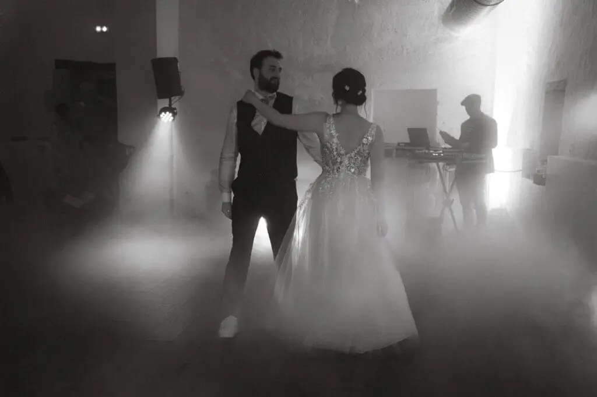
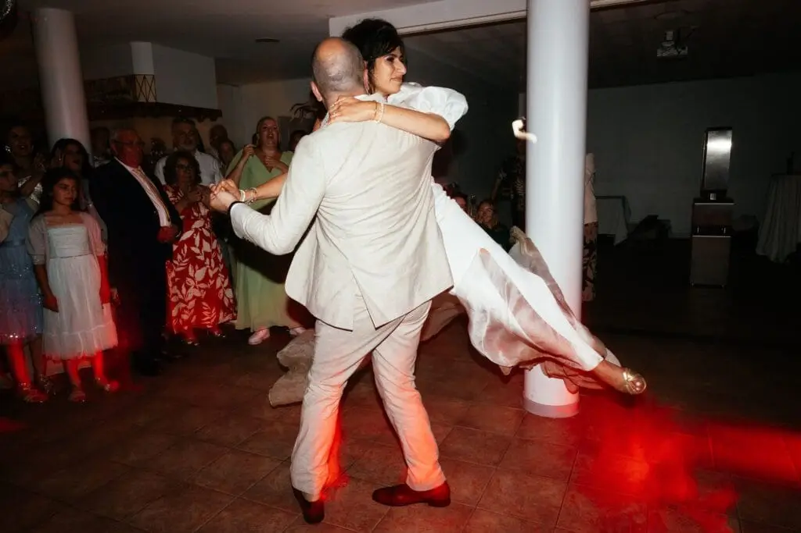

Découvrez comment créer une ouverture de bal à votre image : chorégraphie personnalisée, choix de musique, astuces et conseils pour une première danse unique et mémorable.
L’ouverture de bal est bien plus qu’un simple moment de danse lors de votre mariage. C’est le premier instant où vous vous montrez en couple, un moment attendu par tous vos invités et qui restera gravé dans vos souvenirs pour toujours. C’est l’occasion parfaite de faire passer vos émotions, de montrer votre complicité et de créer un souvenir unique.
Mais ce moment peut parfois générer du stress. Beaucoup de couples se sentent mal à l’aise sur la piste de danse, craignent de paraître maladroits ou ne savent pas comment créer une ouverture de bal mariage qui reflète vraiment leur personnalité. C’est là que la magie opère quand vous choisissez de réaliser une première danse personnalisée, une chorégraphie à votre image qui raconte votre histoire et vous met en valeur.
Dans cet article, nous allons explorer toutes les étapes pour créer une ouverture de bal à votre image : de la sélection de la musique à la création de la chorégraphie, en passant par les répétitions, les astuces pour gérer le stress et les idées originales pour surprendre vos invités.
Pourquoi personnaliser son ouverture de bal ?

Chaque couple est unique, et votre ouverture de bal devrait l’être aussi. La première danse n’est pas seulement une formalité : elle reflète votre histoire et votre complicité. Certaines mariées rêvent d’une valse classique, d’autres d’une chorégraphie rythmée sur un tube moderne. La personnalisation permet de :
Raconter votre histoire : vos choix musicaux, vos pas de danse, vos regards échangés peuvent illustrer votre parcours et votre complicité.
Créer l’effet “wow” : vos invités se souviendront longtemps d’une ouverture de bal originale et authentique.
Se sentir à l’aise : adapter la danse à votre niveau et à votre style vous permet de profiter pleinement de ce moment unique.
Par exemple, un couple que j’ai accompagné a choisi de commencer leur danse sur une ballade douce avant de passer à un rythme plus dynamique, incorporant quelques gestes humoristiques. Résultat : un moment émouvant, drôle et totalement à leur image.
Choisir la musique parfaite
out commence par la musique. Le choix du morceau est crucial, car il va définir le rythme et l’ambiance de votre première danse.
Types de musique :
Romantique et douce : idéale pour un moment intime et émouvant. Les morceaux lents permettent d’exprimer vos émotions à travers chaque geste.
Dynamique et entraînante : surprend vos invités et rend la danse plus festive. Parfait si vous voulez créer une ouverture de bal originale.
Mix ou mash-up : combine plusieurs chansons pour raconter une histoire. Par exemple, commencer par une chanson douce puis passer à un morceau entraînant pour une surprise finale.
Petit conseil : la durée moyenne d’une ouverture de bal est de 3 à 4 minutes. Si vous choisissez plusieurs chansons, assurez-vous que les transitions soient fluides et que la danse reste cohérente.
Si vous manquez d’inspiration pour votre première danse, voici neuf chansons qui font toujours leur effet : Perfect de Ed Sheeran, All of Me de John Legend, Thinking Out Loud, A Thousand Years, La Vie en Rose, Can’t Help Falling in Love, You Are the Reason, Uptown Funk et Happy de Pharrell Williams. Vous pouvez les utiliser telles quelles ou créer un medley pour une ouverture de bal personnalisée qui vous ressemble



9 chansons pour l’ouverture de bal
“Perfect” – Ed Sheeran
Une ballade romantique moderne, idéale pour une danse intime et émotionnelle.“All of Me” – John Legend
Classique incontournable, parfaite pour une chorégraphie douce et pleine de complicité.“Thinking Out Loud” – Ed Sheeran
Romantique et mélodieuse, cette chanson permet un mouvement fluide et élégant sur la piste.“A Thousand Years” – Christina Perri
Idéal pour un mariage qui se veut poétique et chargé d’émotion.“La Vie en Rose” – Édith Piaf (ou reprise moderne)
Un classique intemporel, qui apporte charme et romantisme à votre ouverture de bal.“Can’t Help Falling in Love” – Elvis Presley (ou version moderne)
Douce et universelle, cette chanson s’adapte à toutes les chorégraphies personnalisées.“You Are the Reason” – Calum Scott
Mélodie émotive et crescendo parfait pour une danse pleine de sens.“Uptown Funk” – Mark Ronson ft. Bruno Mars
Pour les couples qui souhaitent commencer doucement puis surprendre leurs invités avec un rythme entraînant.“Happy” – Pharrell Williams
Idéale pour une ouverture de bal dynamique, joyeuse et décalée, qui met tout le monde de bonne humeur.
Vous pouvez même choisir une chanson qui a une signification particulière pour votre couple, comme celle qui passait lors de votre première rencontre ou votre premier voyage ensemble.
Créer une chorégraphie à votre image
Après avoir choisi la musique, il est temps de réfléchir à la chorégraphie. Pas besoin d’être danseur professionnel : l’important est de se sentir à l’aise et naturel.
Étapes pour créer votre danse :
Commencer simple : quelques pas de base suffisent pour donner le rythme. Une ouverture de bal n’a pas besoin d’être compliquée pour être efficace.
Ajouter votre touche personnelle : un tour improvisé, un regard complice, un geste qui vous ressemble. C’est ce qui rendra votre danse unique.
Répéter régulièrement : pratiquez plusieurs fois avant le mariage, même 10-15 minutes par jour, pour gagner en fluidité.
Planifier les transitions : si vous utilisez plusieurs morceaux ou styles musicaux, anticipez comment passer d’un rythme à l’autre sans rupture.
💡 Astuce : vous pouvez faire appel à un coach danse mariage. Il saura vous guider pour créer une chorégraphie professionnelle mais naturelle, adaptée à votre niveau et à votre style.
Idées pour surprendre vos invités
Une ouverture de bal à votre image peut intégrer de petites surprises qui feront sourire ou émouvoir vos invités :
Commencer en solo chacun son tour puis se rejoindre pour le final.
Ajouter un moment humoristique ou inattendu.
Utiliser des accessoires comme un bouquet, des rubans ou des chapeaux pour un effet visuel.
Surprendre avec un changement de style musical ou un passage dansé inattendu.
L’essentiel est de rester authentique. Si vous tentez un passage trop compliqué ou qui ne vous ressemble pas, le résultat peut sembler forcé. Les meilleurs moments sont ceux où vous êtes simplement vous-mêmes.
Préparer la danse et gérer le stress
Le jour J peut être stressant, mais avec une bonne préparation, vous pourrez profiter pleinement de ce moment :
Répétez à l’avance : répéter plusieurs semaines avant le mariage pour être à l’aise avec les pas.
Tester la piste de danse : assurez-vous que l’espace et le sol permettent de danser confortablement.
Prévoir les chaussures adaptées : confortables et adaptées à votre chorégraphie.
Pratiquer en tenue : faites quelques répétitions avec vos chaussures et vêtements de mariage pour éviter les mauvaises surprises.
Respirez et amusez-vous : même si vous faites une erreur, vos invités ressentiront l’authenticité et la complicité.
💡 Astuce : certains couples choisissent de faire leur répétition finale avec un vidéaste pour voir ce qui fonctionne à l’écran et ajuster la chorégraphie avant le mariage.


Anecdotes et inspirations
Un couple a commencé leur ouverture de bal sur une ballade romantique, puis a enchaîné sur un rythme latino. Leurs invités ont été surpris et émus en même temps.
Un autre couple a intégré des gestes symboliques : un clin d’œil à leur première rencontre, un pas qu’ils répètent dans leur salon depuis des années. Résultat : une danse profondément personnelle qui racontait leur histoire.
Pour certains mariages bohèmes, les couples choisissent de finir la danse sur un tour improvisé et un final très dynamique pour lancer la fête, surprenant tout le monde et déclenchant des applaudissements.
Ces exemples montrent qu’une ouverture de bal à votre image peut être émouvante, drôle, originale ou spectaculaire, selon ce que vous souhaitez transmettre.
Conseils pour réussir l’ouverture de bal
Soyez vous-mêmes : inutile de copier une vidéo virale si elle ne vous ressemble pas.
Commencez tôt : planifiez votre première danse plusieurs mois avant le mariage.
Faites des vidéos : filmer vos répétitions permet de corriger les petits détails et de gagner en confiance.
Choisissez la bonne musique : elle doit vous émouvoir et donner envie de danser.
N’ayez pas peur de demander de l’aide : un coach ou un ami expérimenté peut donner des conseils précieux.
En bref,
Réaliser une ouverture de bal à votre image est une manière de rendre votre mariage unique. Entre choix musical, création d’une chorégraphie personnalisée et petits détails qui vous ressemblent, chaque décision contribue à créer un moment inoubliable et authentique.
Ne cherchez pas la perfection, mais la sincérité. Profitez de ce moment pour exprimer votre amour, votre complicité et votre personnalité. Vos invités ressentiront votre authenticité et la magie opèrera naturellement.
Votre ouverture de bal n’est pas juste une danse, c’est un instant qui raconte votre histoire et qui restera gravé dans vos souvenirs pour toujours. Faites-le à votre image, et vous vivrez l’un des moments les plus mémorables de votre mariage.
Lovely Day Event c'est plusieurs types de prestations
L'organisation de mariage
Je vais intervenir sur toutes les étapes de vos préparatifs et vous guider dans vos choix. Je suis force de proposition pour que votre mariage ne ressemble qu’à vous.
Décoration de mariage
Créative et passionnée, je suis certifiée Wedding Designer et je conçois une ambiance scénographique qui correspond au thème de votre mariage.
Coordination le jour J
Je serai le chef d’orchestre pour gérer les différents prestataires, la mise en place de votre décoration et le déroulement de cette belle journée.